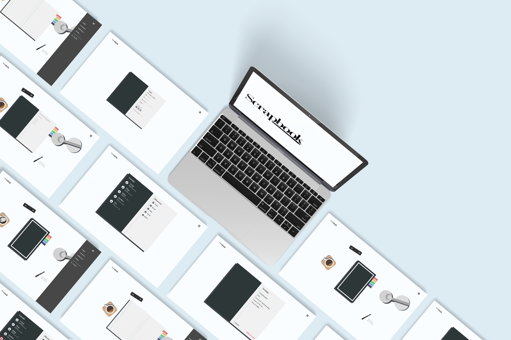

SCRAPBOOK
Overview statement regarding the scope and vision for this multimedia application or interface build.
Throughout my whole life, I have enjoyed reading, telling
stories, and entering the lives and worlds of fiction and
fantasy. However, throughout my time in college, I stopped
reading books and started hanging out with friends, playing
video games, and going to the movies instead. I feel as though
it had a negative impact on my creativity and imagination as
reading gave me an outlet that nothing else could.
In recent years stories have become more important to me as I’ve
immersed myself a lot more in tv shows and books. However, with
the internet, social media, and stigmatization surrounding
reading, I have felt subconsciously pressured to keep my passion
to myself and haven’t been able to share it with the outside
world.
Midway through 2021, I discovered the online book "Omniscient
Readers Viewpoint" which had forever change my life and
rekindled my childhood passion. This book taught me more about
who I am than any other story I've read before. To me, it was
more of an experience than a book. I hope everyone can find a
story that can ignite their own spark the way that Omniscient
Reader did for me. Now that I've felt that emotion and feeling,
I'm constantly searching for the next story that will give me
that same spark as before.
I am looking to provide people with similar interests as mine a
place to share their ideas, experiences, and feelings about
stories in a way that is similar to a personal journal.
Additionally, the added capability of allowing the user to share
their entries with others both inside and outside of their
groups can connect through nostalgia from revisiting their own
or others' past experiences.
Following the design thinking methodology, along with a variety
of secondary research, and conducting target audience-based
surveys, I was able to get many responses with an inclination
towards nostalgia and wanting to reflect on their past;
"I can remember myself re-enacting something from a story or
having a similar connection to it"
"When I was younger I would delve into books to make me feel
something."
As a concept, Scrapbook is an online interactive journal that
allows users to record and document their feelings regarding
books they have read. The purpose of this is to later relive
their nostalgia and share their experiences within and outside
the reading community.
This offers users the chance to think back on their past and
experience the same emotions they once felt. This also gives
them an opportunity to interact with their communities and
benefit from this shared interest by sending each other new book
recommendations, seeing what their friends are interested in,
keeping updated with the current book talk, or having a way to
express themselves within their book club.
